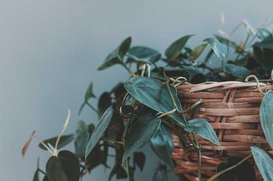

お店について
エミルは、島根県出雲市大津町にあるカフェです。Instagramのプロフィールには「家でも職場でもない第3の場所」とあり、アカウント名にも「3rdplace」の文字が入っています。
地元メディアの記事によると、オーナーの方は以前から自分のお店を持つことを望み、仕事終わりにコーヒーを飲める場所が出雲には少ないと感じて、2021年11月に開店されたとのことです。使われなくなっていた建物を生かし、花や植物、本のある落ち着いた空間で、自分の時間をゆっくり過ごしてほしい、という想いが紹介されています。
※店名の意味は確認できていません。上記は公開されている紹介記事とInstagramの記載に基づきます。

(creativecommons.org)
アクセス
〒693-0011 島根県出雲市大津町2077-8
電話: 準備中 / 営業時間: 準備中
Instagram @emil_3rdplace
写真クレジット
各写真の下に作者・出典・ライセンス(creativecommons.org CC0)を記載しています。縮小・切り抜きなどの加工をしています。